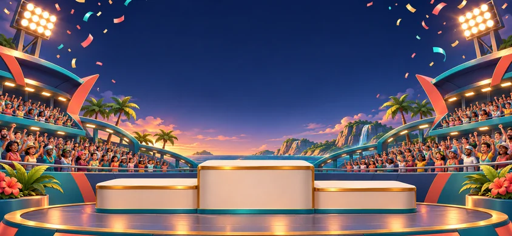

ערכת שידור מרוצים 01
על קו הזינוק.
טוענים גשר…12 קבוצותמקורי · CC0
01 גשר הזינוק
5 נורות עצמאיותטוענים מודל

02 רגע הניצחון
844 × 390הבמה שלכם.
2
1
3
קהל וקונפטי · WebP
03 הנבחרת המלאה
12 סמלים · SVG · 64 × 64פאנלים לשידור
טקסט חי ב־HTML · תמונות נקיות מכיתובפס דירוג חוזר
150 × 12, חזרה בשני הצירים

מסגרת כרטיסייה · 9-slice
48 × 48, חיתוך 12px, שוליים קבועים
הקפה מהירה 1:24.086
מסגרת גמישה אותן פינות, רוחב משתנה

הדף משתמש במנוע התלת־ממד המקומי של המאגר. להפעלה יש להגיש את המאגר דרך HTTP, כמפורט בהוראות.